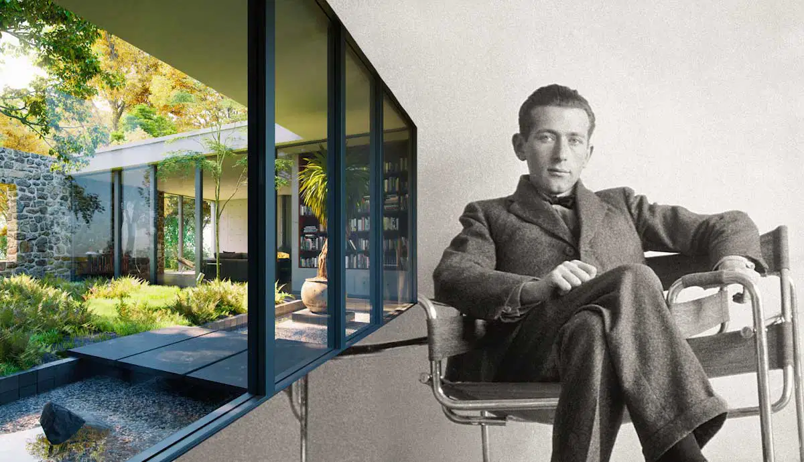
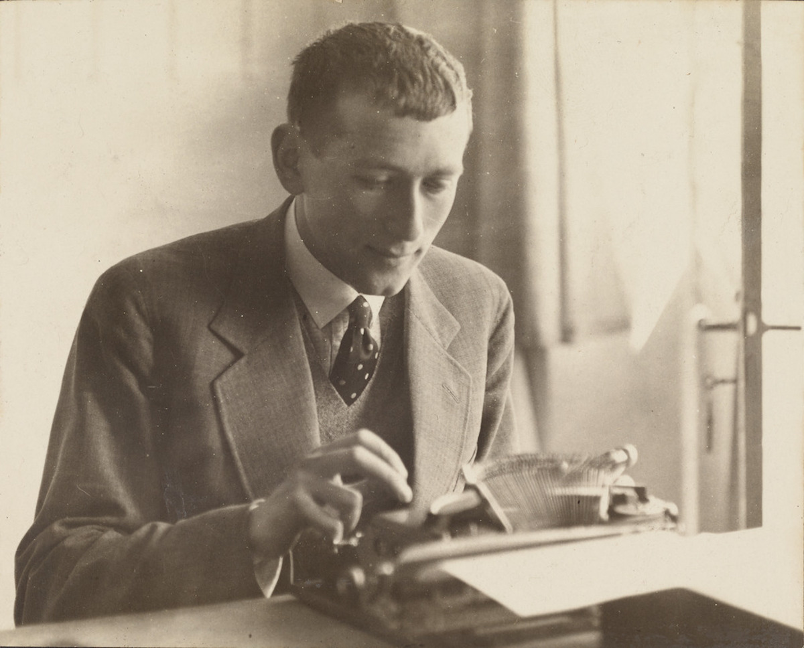
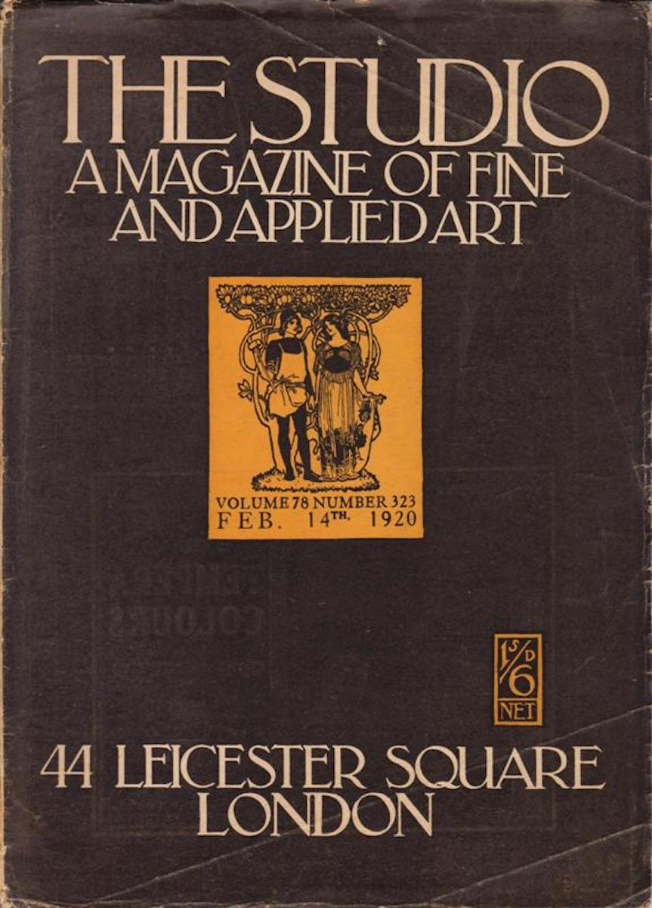
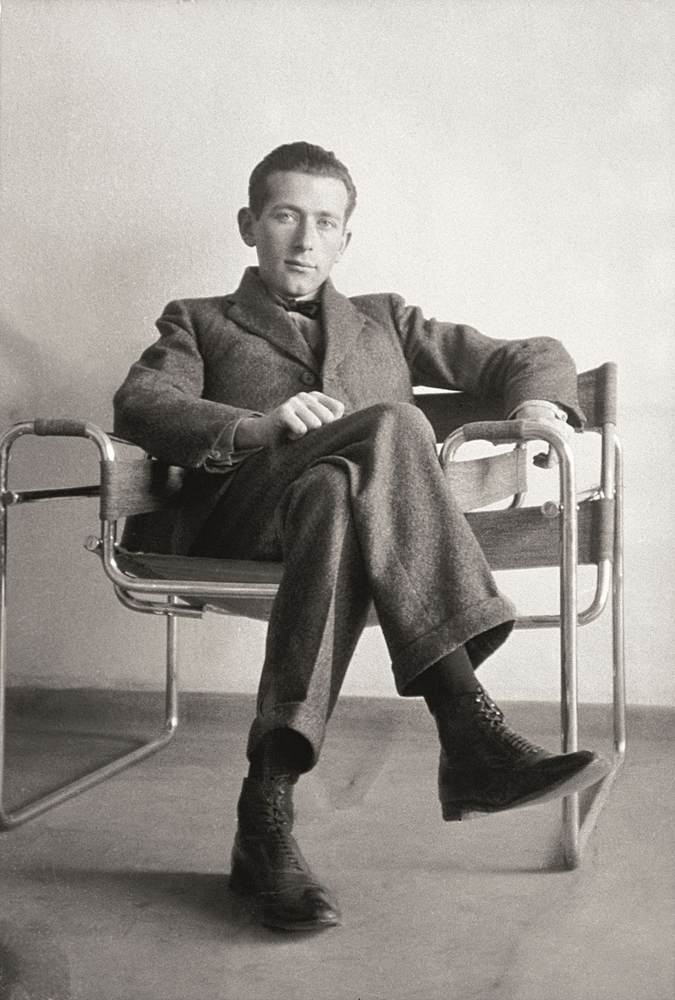
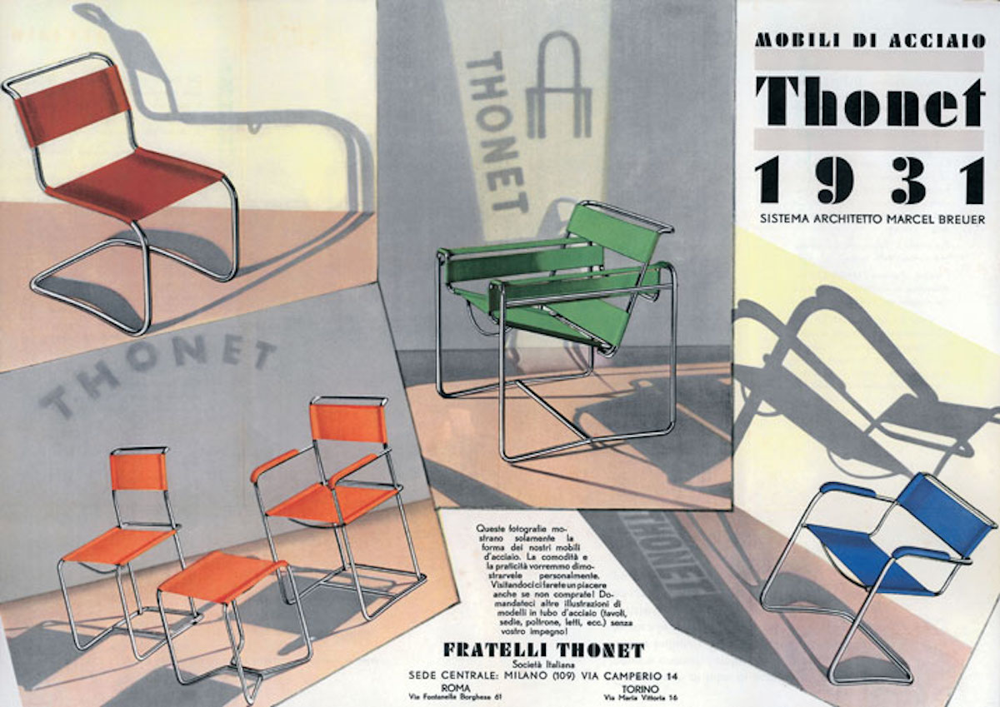
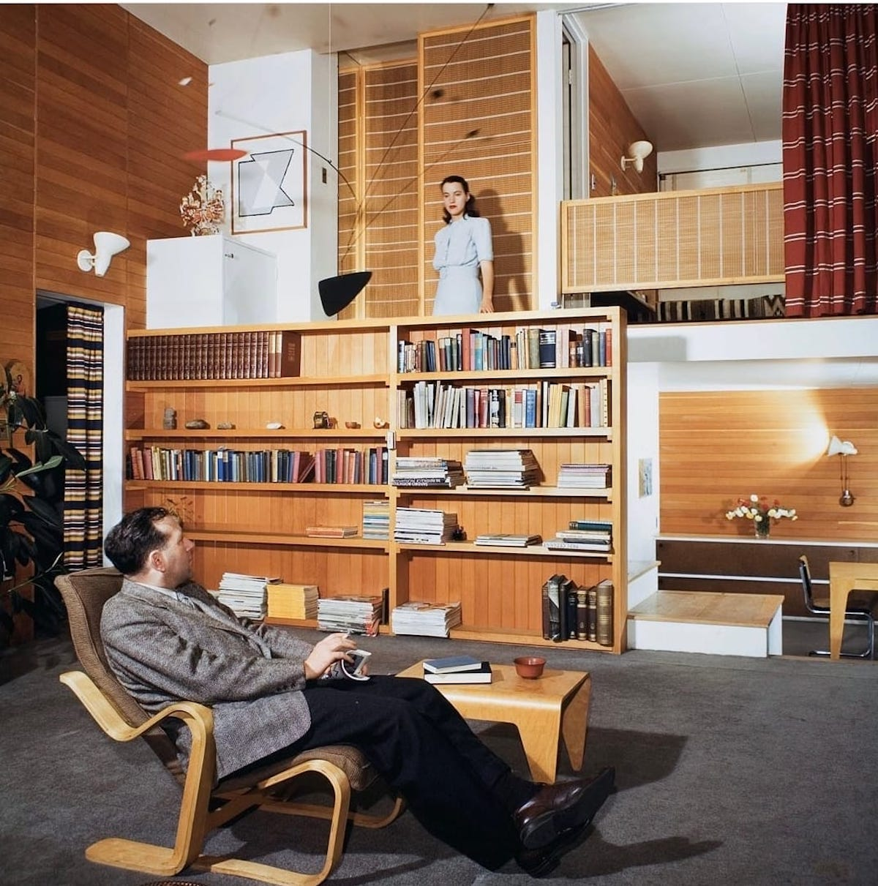
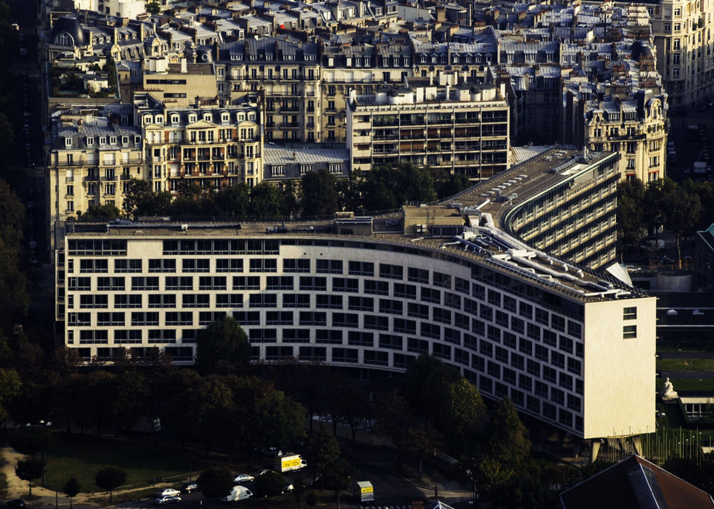

Marcel Breuer’s Legacy: Bridging Bauhaus Ideals and Brutalist Vision
AWith his innovative use of materials and forms, the designer and architect Marcel Breuer significantly influenced the development of design in the 20th century.

Marcel Breuer became known for his furniture and architectural designs. From the start, he didn’t shy away from experimenting with interesting shapes and materials. As a result, Breuer’s signature style is characterized by clean lines, minimalist forms, and the use of materials such as tubular steel and reinforced concrete. His whole oeuvre embodies the Bauhaus objective of integrating art and industry.
Marcel Breuer’s Early Life

Marcel Lajos Breuer (1902-1981) was born in Pécs, Hungary, as the child of Jakab Breuer and Francisca Leko. Marcel also had two older siblings, called Alexander and Hermina Maria. His friends and family called him Lajkó. Breuer’s father was a dental physician, which allowed his family to live a comfortable middle-class lifestyle. Marcel’s parents were both Jewish, but he himself rejected religion from a young age. Contrary to this, Breuer did embrace another aspect of his upbringing: his parent’s encouragement to take an active interest in culture and the arts.

When Breuer moved to Vienna for his studies, in the late summer of 1920, Europe was still in a state of rebuilding after World War I. With the end of the war in 1918, Austria and Hungary, which had been part of the Austrian-Hungarian Empire, had become independent nations. It was a time of change that affected various aspects of society. Against this backdrop, the young and talented Breuer arrived in Vienna to start a new phase of life. However, he withdrew from the Academy soon after starting classes. He felt that the classes focussed too much on discussions about aesthetic theories, rather than on the fundamentals of drawing, painting, and sculpting. Instead, Breuer took an apprenticeship in the shop of a local cabinet maker called Bolek. Soon, he found out about the Bauhaus School of Design, Building and Craftsmanship in Weimar.
Marcel Breuer at the Bauhaus

Only a few weeks after Breuer learned about the Bauhaus, he managed to secure a place there among 143 other students. The Bauhaus was founded only a year earlier, in 1919, which meant that Breuer went there during its early days. Throughout Breuer’s four-year study at the Bauhaus, he mainly devoted himself to studying architecture. There were no official architecture classes yet during the first years of the Bauhaus, instead, Breuer gained architectural training during an apprenticeship under Walter Gropius. After following a carpentry workshop under Gropius’ leadership, they became close. Another important source of inspiration came from his painting teacher Paul Klee. Klee’s visions of painting inspired Breuer. Klee taught him that a painting was built up in the same way as an architectural structure with repetitive, geometric units.
After completing his studies at the Bauhaus in 1924, Breuer spent a short while in Paris, where he worked at the office of Pierre Charreau. He was soon asked to return to Weimar as the Bauhaus head of the furniture and carpentry workshop. When the Bauhaus moved from Weimar to Dessau the following year, Breuer got involved in the interior design plan for the new school.
In 1926 he established the Standard Möbel Company, through which he started marketing a full line of steel furniture. He also got married to Marta Erps, who was studying weaving at the Bauhaus workshops. Breuer and Erps met each other while collaborating on the Dessau project. However, their relationship only lasted a few years and they officially divorced in 1934.

Towards the end of the 1920s, the Bauhaus dealt with some internal political issues, as well as the increasing pressure from Germany’s rising Nazi regime. As a result, many people left the Bauhaus, including Gropius who was the school’s director at the time. Breuer himself left. He went to Berlin, where he joined the Bund Deutscher Architekten and founded an architectural practice with a former student. During the late 1920s, Breuer first worked on small commissions. His work was represented at various exhibitions. In 1932, he received his first independent architectural commission for a modern house.
Following the completion of this project, Breuer traveled extensively through Southern Europe and Northern Africa. It was a time of exploration, which unfortunately ended with his return to a grim Germany. The disturbing political atmosphere made Breuer move in the end. With the help of Gropius, he secured papers to relocate to London, where he, as a Jewish citizen and modern artist, would be safer. After all, Nazi supporters thought that modern art and architecture were the art of decay. They even organized an exhibition called Entartete Kunst (Degenerate Art) in 1937. In London, Breuer independently developed a line of bent plywood furniture.
Breuer’s move to the United States

Because of limited building prospects in England and increasing war threats, Breuer decided to move once again in 1937. This time, his destination was the United States, where Gropius secured him a position at Harvard University’s Graduate School of Design. Just like other Bauhaus immigrants, Breuer was drawn to the structural transparency and efficient design of American industrial buildings and inspired by the traditional architecture of America’s New England region.
Filled with new inspiration, Breuer and Gropius formed a partnership and produced several iconic houses together. Starting from the mid-1940s, Breuer established his own practice, initially in Cambridge and later in New York, where he relocated to in 1946. In 1940, he got married to his second wife Constance Crocker Leighton, better known as Connie. Connie, who had studied at the Brimmer School, would work as his secretary, business manager, and accountant. Together they had two children, Tamás and Francesca.
Breuer designed several iconic homes, which formed the pinnacle of his domestic architectural production. Thanks to the success of these projects, he received international recognition during the 1950s as one the key figures of modern architectural design. He was now seen as one of the great architects like Mies van der Rohe and Frank Lloyd Wright.

Breuer would also design many important public buildings, like the UNESCO headquarters in Paris and the Bijenkorf department store in Rotterdam. However, he wouldn’t do all of his projects by himself. In 1956, Breuer formed a partnership with several young architects who had worked for him, operating as Marcel Breuer and Associates. Together they designed impressive and diverse works like the Armstrong Rubber Building and the Whitney Museum of American Art in New York. By the mid-sixties, Breuer had settled in his office at 635 Madison Avenue in New York and opened an office in Paris as well. Breuer’s studio produced over a hundred buildings.
Years of hard work eventually took their toll. During a trip to Afghanistan, Breuer suffered from a nearly fatal heart attack after which he was forced to slow down and take a step back from the central role in his company. However, regardless of his weakened health and the difficult economic climate of that period, Breuer continued to design buildings all throughout the 1970s. During this last decade of Breuer’s life, he also received a number of honors. Exhibitions of his works were held at the Bauhaus-Archiv Museum in 1975 and at the MoMA in 1981. Breuer passed away on July 1, 1981, having reached the status of an architectural genius.
The Wassily and Cesca Chair

Read the full article on www.thecollector.com and discover Marcel Breur's furniture and architectural designs.